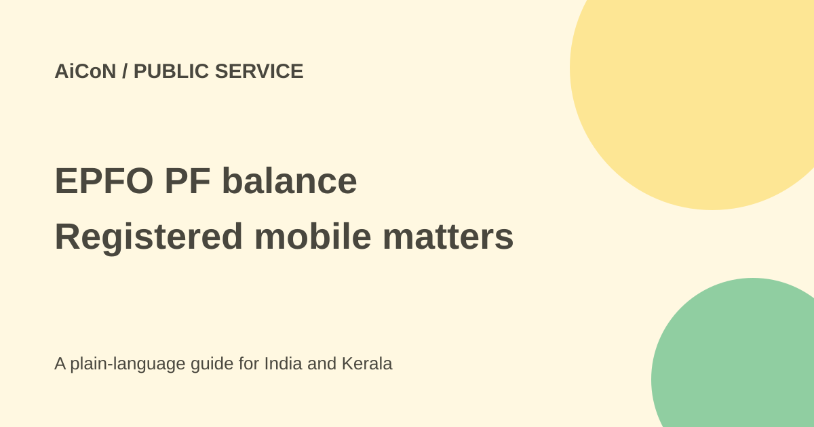

EPFO PF balance: missed call, SMS and Malayalam steps
You can request your EPFO balance without a smartphone app. Use the official inquiry numbers from your registered mobile, and do not promise an instant reply every time.

Which numbers are official?
EPFO's current documents page and passbook page list 9966044425 for missed-call balance inquiry and 7738299899 for short-code SMS. These are inquiry services, not a payment or withdrawal instruction.
The SMS note says UAN-activated members can request the last PF contribution and balance from their registered mobile. UAN is the Universal Account Number used to link a member's EPF records. A salary deduction alone does not prove that the latest contribution has already appeared in the balance reply.
How to use the missed-call service
- Check that the phone number you are using is registered against your activated UAN.
- Give a missed call to 9966044425 from that number.
- Wait for the SMS response and check the contribution and balance details.
- If there is no reply, check registration and KYC before trying again later.
A detailed Livemint report of the service states that at least one of bank account, Aadhaar or PAN KYC should be seeded against the UAN. It says the call disconnects after two rings and has no service cost to the member. This guide does not guarantee delivery within 10 seconds.
How to request Malayalam by SMS
From the registered mobile, send this literal message to 7738299899:
EPFOHO UAN MAL
Keep UAN as the word shown in EPFO's official SMS instruction. Do not replace it with your 12-digit UAN number for this command. MAL is the Malayalam language code. For English, the official note gives EPFOHO UAN; English is the default.
The note lists ten languages: English, Hindi, Punjabi, Gujarati, Marathi, Kannada, Telugu, Tamil, Malayalam and Bengali. It says the reply includes the last contribution, balance and available KYC information. The SMS must come from the UAN-registered number. Check your mobile plan for any outgoing SMS charge; do not pay an unofficial agent for this inquiry.
When you need the full passbook
A short balance SMS is not a full month-by-month statement. For detailed contributions, use the official Member Passbook link from EPFO's site. Use the member service portal for account and KYC-related work. Check which service handles your actual request rather than treating balance inquiry as a withdrawal or claim.
If a contribution seems missing, compare the wage month, employer record and passbook, allowing for processing or posting delays. Do not assume an SMS snapshot proves that a payment was never made. Ask the employer or use EPFO's official grievance channel when the difference remains unresolved.
Safety checks
The official passbook page warns against calls asking for Aadhaar, PAN, bank details, OTPs or payment. EPFO says it does not call members or pensioners to deposit money. Do not share your portal password or an OTP with a person claiming they must unlock your balance.
Enter private account details only on the official service you intended to use. Avoid unofficial apps and links promising a faster PF release. Balance inquiry itself does not authorise anybody to change bank details or file a claim.
What changed since the original AiCoN post?
The original headline promised 10 seconds and called the whole flow free. This guide keeps the official numbers but avoids a guaranteed reply time, makes the literal Malayalam SMS format clear and separates a missed-call service from possible mobile-plan SMS costs.
Frequently asked questions
Can I send from another number?
The official note requires the registered mobile.
Do I need an app for SMS?
No. An ordinary phone that can send SMS can use the documented inquiry.
Does the SMS withdraw money?
No. It requests information.
Sources: Official EPFO documents and service links · Official SMS note · Official passbook and safety warning · Missed-call prerequisites, Livemint report. Checked 7 October 2026.